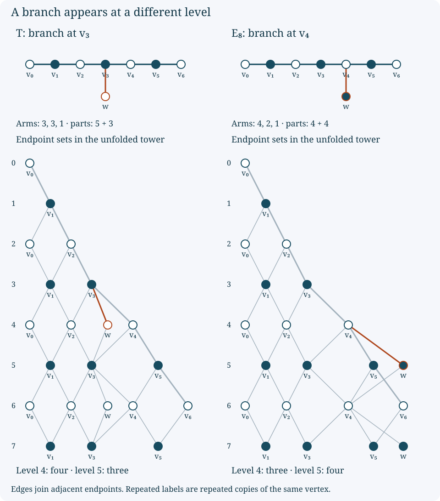

Bratteli reflection and the exceptional graph
Original exposition and figures by OpenAI Codex, GPT-6 Astra, Ultra. New text and figures: CC0-1.0.
A diagram of successive finite-dimensional algebras contains repeated copies of graph vertices. Keeping a first appearance, returning along an old edge, and introducing another vertex are different operations. A small example shows how to distinguish them by endpoint sets, matrix-block sizes and a polynomial invariant.
The example also resolves a specific discrepancy in Masamichi Takesaki, Theory of Operator Algebras III, XIX.4. The illustration after Definition 4.8 on printed page 469 and the rooted \(E_8\) graph on printed page 492 have different incidence patterns. The later sentence identifying them does not hold for the displayed earlier diagram. We give exact finite graphs and proofs below. The classification and existence of subfactors are separate questions.
Unfold a rooted graph by paths
Let \(G=(V,E)\) be a finite connected simple graph with at least two vertices, and choose a root \(r\). Edges are unordered pairs of distinct vertices. A path of length \(k\) here means a walk
\[ (r=v_0,v_1,\ldots,v_k),\qquad \{v_{j-1},v_j\}\in E; \tag{BRE.1} \]vertices and edges may be revisited. Let \(\mathcal P_k(v)\) be the finite set of such walks ending at \(v\), put \(p_k(v)=|\mathcal P_k(v)|\), and set
\[ S_k=\{v:p_k(v)>0\}. \]At level \(k\) of the unfolded diagram put one vertex for each \(v\in S_k\). Connect the copy of \(v\) at level \(k\) to the copy of \(w\) at level \(k+1\) when \(\{v,w\}\in E\). Copies at different levels retain the same label when they come from the same vertex of \(G\).
Path recurrence. With \(p_0(r)=1\) and \(p_0(v)=0\) for \(v\ne r\),
\[ p_{k+1}(w)=\sum_{\{v,w\}\in E}p_k(v),\qquad S_{k+1}=\{w:\text{\(w\) has a neighbour in \(S_k\)}\}. \tag{BRE.2} \]Indeed, deleting the last edge partitions the walks ending at \(w\) according to their previous endpoint \(v\). Appending that edge is the inverse bijection on each part.
This recurrence constructs actual inclusions of finite-dimensional algebras. Define
\[ D_k=\bigoplus_{v\in S_k}\operatorname{End}_{\mathbb C} \bigl(\mathbb C^{\mathcal P_k(v)}\bigr). \tag{BRE.3} \]The path partition identifies
\[ \mathbb C^{\mathcal P_{k+1}(w)} =\bigoplus_{\{v,w\}\in E}\mathbb C^{\mathcal P_k(v)}, \]where zero summands are omitted. Send \(a=(a_v)\in D_k\) to the block-diagonal operator whose block on the displayed summand is \(a_v\). This map \(D_k\to D_{k+1}\) preserves sums, products, adjoints and the identity, by their blockwise definitions. It is injective: every \(v\in S_k\) has a neighbour, so its block occurs in at least one target summand. The inclusion multiplicities are exactly the edges of the unfolded diagram.
For a rooted tree, the first level at which \(v\) appears is its graph distance from \(r\). A walk cannot be shorter than the unique simple path, and that simple path attains the distance. Every later occurrence is at a level with the same parity; inserting a two-step trip along an edge and back realizes every larger level of that parity. Thus
\[ v\in S_k \quad\Longleftrightarrow\quad d(r,v)\le k,\qquad k-d(r,v)\in2\mathbb Z. \tag{BRE.4} \]The parity assertion follows because each edge changes the parity of distance in a tree.
Consequently, an edge leading to a first appearance must be distinguished from an edge leading to a later copy of an old vertex. The number \(p_k(v)\), which is a matrix-block size, must also be distinguished from the number of vertices in \(S_k\).
Two explicit trees behind the comparison
Use vertices \(v_0,\ldots,v_6,w\), with root \(v_0\). Both trees contain the chain
\[ v_0-v_1-v_2-v_3-v_4-v_5-v_6. \tag{BRE.5} \]Define \(T\) by adding \(\{v_3,w\}\), and define \(E\) by adding \(\{v_4,w\}\). The three arms of \(T\), measured from its unique degree-three vertex, have lengths \(3,3,1\). Those of \(E\) have lengths \(4,2,1\). The latter is the rooted \(E_8\) graph displayed on page 492 of the cited source.
Formula (BRE.4) gives the following complete endpoint sets through level seven.
| Level | Tree \(T\), with \(w\) attached to \(v_3\) | Tree \(E\), with \(w\) attached to \(v_4\) |
|---|---|---|
| 0 | \(v_0\) | \(v_0\) |
| 1 | \(v_1\) | \(v_1\) |
| 2 | \(v_0,v_2\) | \(v_0,v_2\) |
| 3 | \(v_1,v_3\) | \(v_1,v_3\) |
| 4 | \(v_0,v_2,w,v_4\) | \(v_0,v_2,v_4\) |
| 5 | \(v_1,v_3,v_5\) | \(v_1,v_3,v_5,w\) |
| 6 | \(v_0,v_2,w,v_4,v_6\) | \(v_0,v_2,v_4,v_6\) |
| 7 | \(v_1,v_3,v_5\) | \(v_1,v_3,v_5,w\) |
After level six the two endpoint sets alternate with period two. This follows directly from (BRE.4), since six is the largest distance from the chosen root in either tree.
Reading the earlier illustration. Start at its star, with level zero there. Label the successive vertices on the descending right boundary \(v_0,\ldots,v_6\). The additional white vertex directly below the level-three boundary vertex is \(w\). Its incident edges run to the level-three and level-five copies of \(v_3\). The copies of \(v_3\) are repeated black vertices on the central vertical line. The two diagonals from each such copy meet the repeated copies of \(v_2\) and \(v_4\). The other diagonals are the repeated edges of (BRE.5).
With these labels, every displayed row and edge through level ten agrees with the unfolding of \(T\). In particular, there are four vertices at level four and three at level five. The unfolded \(E\) has three at level four and four at level five. This finite discrepancy already rules out the claimed identification; no interpretation of the later ellipses can change those levels.
The visibly heavier boundary segments in the earlier illustration form the seven-vertex path (BRE.5). They omit the short edge to \(w\). Selecting those heavy segments alone therefore does not give \(E_8\) either. The full incidence comparison above establishes the discrepancy independently of a choice of line-width threshold.

Figure. The upper drawings are defined by the explicit edge lists in this section. The lower drawings unfold those graphs by (BRE.2). The short branch of \(T\) first appears at level four; the short branch of \(E_8\) first appears at level five. These are original drawings, not reproductions of the source illustration.
The norm of the first tree is exactly two
For a finite simple graph, let \(A\) be its adjacency matrix on \(\mathbb C^V\), with the usual Euclidean inner product. Suppose \(p_v>0\) and \(Ap=\lambda p\), where \(\lambda>0\). For \(x\in\mathbb C^V\), expanding each square gives
\[ \lambda\sum_v|x_v|^2-\langle Ax,x\rangle =\sum_{\{u,v\}\in E}p_up_v \left|\frac{x_u}{p_u}-\frac{x_v}{p_v}\right|^2. \tag{BRE.6} \]The coefficient of \(|x_v|^2\) on the right is \(\sum_{u\sim v}p_u/p_v=\lambda\). The mixed terms are exactly the negative adjacency quadratic form. This proves the identity.
The same positive eigenvector gives an operator-norm bound directly. Weighted Cauchy–Schwarz yields
\[ |(Ax)_v|^2 \le \left(\sum_{u\sim v}\frac{p_u}{p_v}\right) \left(\sum_{u\sim v}\frac{p_v}{p_u}|x_u|^2\right). \]Summing over \(v\), and using \(Ap=\lambda p\) twice, gives \(\|Ax\|^2\le\lambda^2\|x\|^2\). Here Cauchy–Schwarz is the finite-sum inequality obtained by minimizing \(\sum_i|a_i-tb_i|^2\) over the complex scalar \(t\); the case \(b=0\) is immediate. Thus \(\|A\|\le\lambda\), while \(Ap=\lambda p\) gives equality.
For \(T\), take
\[ (p_{v_0},p_{v_1},\ldots,p_{v_6};p_w) =(1,2,3,4,3,2,1;2). \tag{BRE.7} \]At an end of the chain the neighbouring weight is twice its own. At an interior chain vertex other than \(v_3\), the two neighbouring weights sum to twice its own. At \(v_3\) the sum is \(3+3+2=8\), and at \(w\) it is \(4=2\cdot2\). Thus \(Ap=2p\). The positive-vector norm bound therefore gives
\[ \|A_T\|=2. \tag{BRE.8} \]This is an exact finite-matrix calculation. It does not require any claim that the drawn tower comes from a particular subfactor.
A determinant distinguishes the graphs without a root
Write \(P_G(x)=\det(xI-A_G)\), and let \(P_n\) denote the polynomial for the \(n\)-vertex path. Set \(P_0=1\), the determinant of the empty matrix.
Leaf recurrence. If \(\ell\) is a leaf with neighbour \(u\), then
\[ P_G(x)=xP_{G-\ell}(x)-P_{G-\{\ell,u\}}(x). \tag{BRE.9} \]To prove it, expand the determinant by permutations. A nonzero permutation term either fixes \(\ell\), contributing the first term, or contains the transposition \((\ell,u)\). No longer cycle through \(\ell\) is possible, because it has only one neighbour. The transposition has negative sign, and its two matrix entries are both \(-1\); removing the two vertices gives the second term. This accounts for every nonzero term. For disjoint components the matrix is block diagonal, so their determinant polynomials multiply.
Consequently \(P_1=x\) and
\[ P_n=xP_{n-1}-P_{n-2}. \]Repeated substitution gives
\[ \begin{aligned} P_2&=x^2-1,&P_3&=x^3-2x,\\ P_4&=x^4-3x^2+1,&P_7&=x^7-6x^5+10x^3-4x. \end{aligned} \tag{BRE.10} \]Apply (BRE.9) to the extra leaf \(w\). Removing its neighbour from the remaining chain gives two three-vertex paths for \(T\), and paths of four and two vertices for \(E\). Therefore
\[ \begin{aligned} P_T(x)&=xP_7(x)-P_3(x)^2\\ &=x^8-7x^6+14x^4-8x^2,\\ P_E(x)&=xP_7(x)-P_4(x)P_2(x)\\ &=x^8-7x^6+14x^4-8x^2+1. \end{aligned} \tag{BRE.11} \]In particular \(\det A_T=0\), whereas \(\det A_E=1\), since both matrices have even order eight. Relabelling vertices conjugates an adjacency matrix by a permutation matrix and leaves its determinant unchanged. Thus \(T\) and \(E\) are not isomorphic even when the root is forgotten.
There is also a direct counting invariant. Their bipartition sizes are \(5+3\) and \(4+4\), respectively. A connected bipartite graph has a unique bipartition up to swapping its two parts: the parity of the length of a path from a chosen vertex determines its part. Every graph isomorphism preserves these sizes up to that swap. The counts independently distinguish the same two graphs.
Worked endpoint and matrix-block calculations
1. First appearance of the short branch. At which level can the extra vertex \(w\) occur in each tree?
Solution. In \(T\), the simple path is \(v_0,v_1,v_2,v_3,w\), so its length is four. In \(E\), the path continues through \(v_4\) before reaching \(w\), so its length is five. Formula (BRE.4) gives all later occurrences: even levels at least four in \(T\), and odd levels at least five in \(E\). Treating the level-five central copy of \(v_3\) in the first tower as a new short-branch vertex would change the labels and the incidence relations.
2. Matrix blocks detect the discrepancy. Calculate \(D_4\) for the two trees using (BRE.3).
Solution. At level two the walk counts at \(v_0,v_2\) are \(1,1\). At level three those at \(v_1,v_3\) are \(2,1\). Thus in \(T\) the level-four counts at \(v_0,v_2,w,v_4\) are \(2,3,1,1\). In \(E\), the counts at \(v_0,v_2,v_4\) are \(2,3,1\). Hence
\[ \begin{aligned} D_4(T)&\cong M_2(\mathbb C)\oplus M_3(\mathbb C)\oplus\mathbb C\oplus\mathbb C,\\ D_4(E)&\cong M_2(\mathbb C)\oplus M_3(\mathbb C)\oplus\mathbb C. \end{aligned} \tag{BRE.12} \]Their complex dimensions are \(15\) and \(14\). The preceding endpoint sets and algebras agree through level three, so agreement of that shorter prefix cannot decide this example.
3. Which conclusions have been established? Does a drawing with the correct \(E_8\) edges prove the existence or classification of the corresponding subfactor?
Solution. Section 1 constructs finite matrix-algebra inclusions from either edge list by a direct formula. It does not provide the additional conditional expectations, Jones relations, compatible traces and analytic realization needed for a subfactor assertion. Sections 2–4 prove a graph comparison, a norm calculation and a determinant calculation. The exceptional subfactor realization and classification require their separate programme proofs. The precise correction here is to the earlier illustration's identification, not to those classification theorems.
For the source comparison, see M. Takesaki, Theory of Operator Algebras III, XIX.4, Definition 4.8 and the illustration on p. 469, and the graph list on p. 492. The edge list for \(E\) specifies the independently drawn rooted \(E_8\) diagram used here.